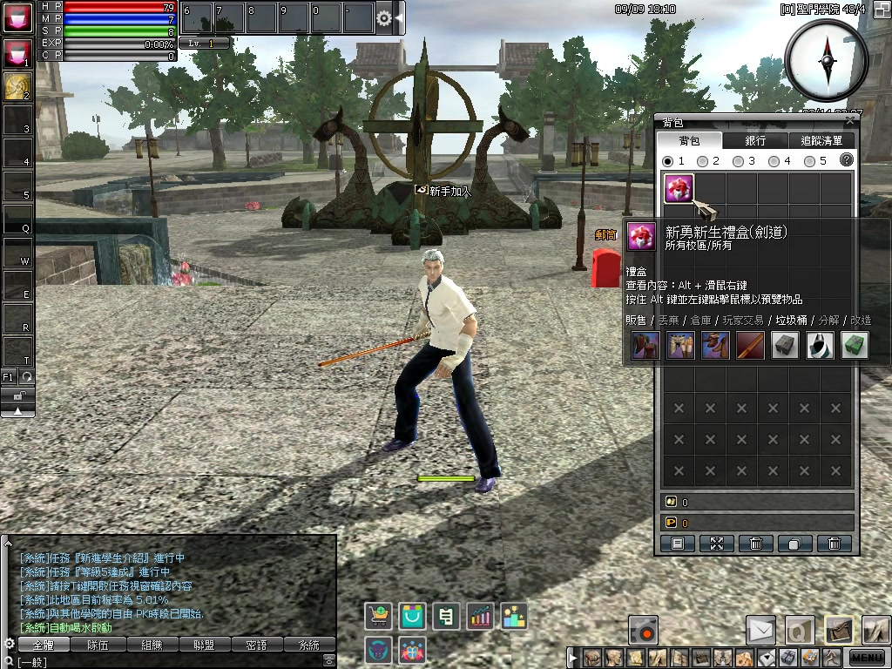
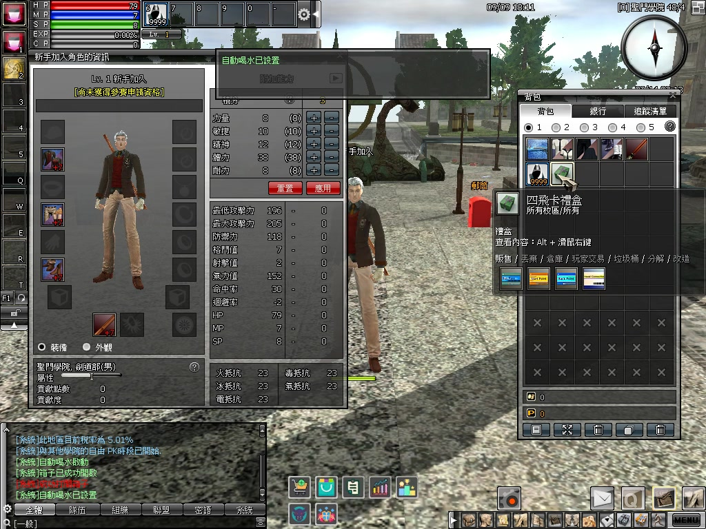
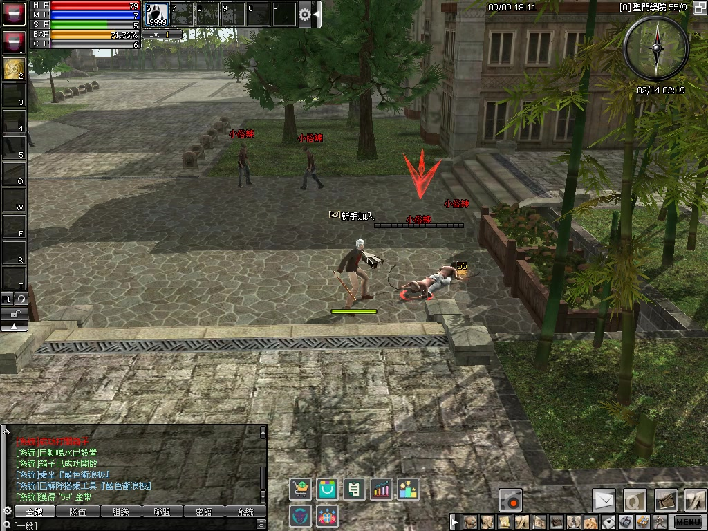

背包
先開啟新生禮盒
打開背包，查看禮盒內容並開啟，取得這次冒險的起始裝備與道具。
遊玩指南 01 / 初入校園
打開新生禮盒，準備武器、防具與補給。
找到附近的怪物，就能開始累積經驗。
影片暫時無法載入，請重新整理或使用下載影片連結。下方圖文仍可查閱。
選擇步驟，跳到對應操作。
依自己喜歡的職業與玩法展開冒險；本篇以影片中的開局流程作示範。

打開背包，查看禮盒內容並開啟，取得這次冒險的起始裝備與道具。

將武器與防具裝備到角色身上。部分新手裝備有使用期限，可將滑鼠移到道具上查看。

準備好補給後，前往怪物區。影片示範在聖門學院挑戰「小俗辣」，開始打怪練等。